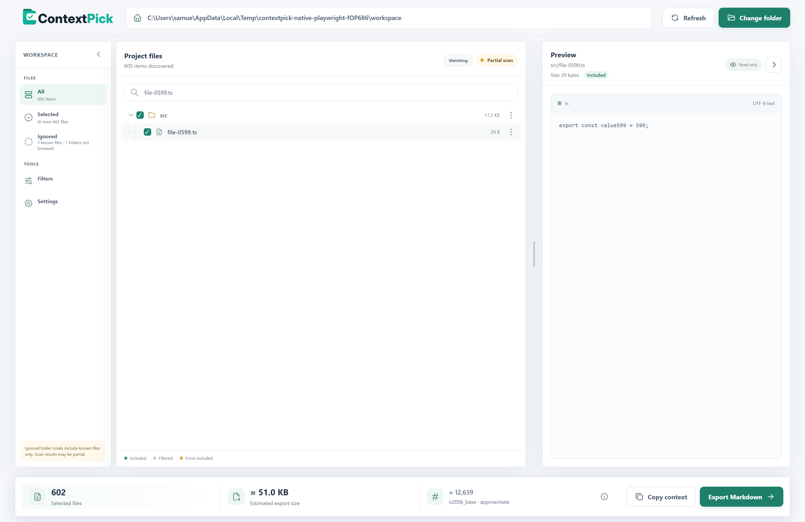
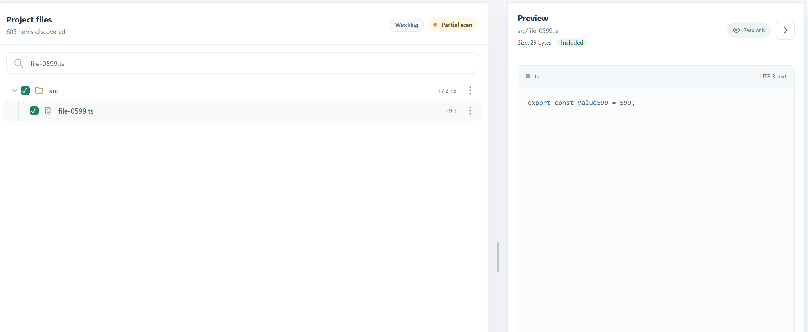
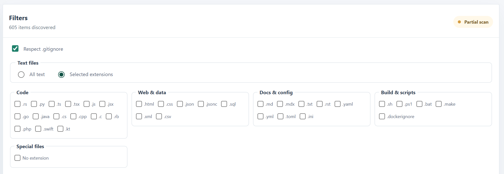
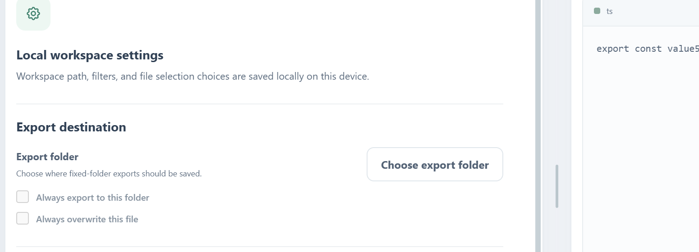

Open a workspace
Choose a local project folder. ContextPick builds a searchable file tree on your device.
Project context, ready to share
Choose the useful parts of a codebase or document folder, review what will be included, then export one organized Markdown file for ChatGPT, Claude, Gemini, or another text-based assistant.
Windows x64 · v0.9.0 · unsigned · Free and open source

A real Windows app view. Your source stays on your device.
The context problem
When a project spans source files, tests, configuration and notes, the context an assistant needs is spread across the folder. Finding those files one by one and attaching them individually takes time. Upload limits and context windows also vary by provider, plan and feature.
ContextPick turns a local project selection into one readable Markdown document. You can include a broad set of text files, narrow the set by extension, inspect the selection and size, and decide yourself where the result goes.
A simple workflow
Keep the choices visible, and make the final export yourself.
Choose a local project folder. ContextPick builds a searchable file tree on your device.
Select files and folders, or limit eligible text files to extensions such as Rust, TypeScript, Markdown or JSON.
Preview text, see inclusion reasons, inspect folder sizes and check estimated export bytes and tokens.
Copy the generated context or save it as Markdown. A fixed export folder can make repeat exports one click.
Made for careful selection
ContextPick focuses on gathering and reviewing local files. It does not try to become an editor or an AI chat app.
Find files in a virtualized tree that stays responsive across larger workspaces. Expand folders and select individual files.
Understand what is included, filtered, force-included, or blocked by a hard safety rule before exporting.
Include eligible text files or choose a compact set of common extensions. `.gitignore` rules are respected by default.
Files are emitted with stable relative paths and safe code fences, making one document easier to scan and hand off.
See logical content sizes on folders, estimated export bytes, and an approximate local token count.
Keep a chosen output folder in Settings. Optional overwrite replaces that one generated file after you explicitly enable it.
See the app
These screenshots were captured from the Windows desktop app with synthetic example files.



Local-first by design
ContextPick prepares a file on your computer. You choose whether and where to share the resulting text.
The app has no cloud processing, account requirement or telemetry. It reads selected local files to preview and build an export.
ContextPick does not edit project files. Export protections prevent replacing a source file inside the active workspace.
Inspect the selected files and generated output before copying or sharing it with an AI service.
Workspace paths, selection choices and saved profiles are stored locally in the operating system’s app configuration area.
Know what it does
ContextPick helps organize text you choose. It does not determine what is relevant, remove secrets automatically, or increase the capacity of another tool. Always review the export for sensitive or unnecessary material.
Frequently asked
No. ContextPick creates a local Markdown document and has no integration that uploads source files. You decide whether to share the export with another service.
The app can gather many selected files into one Markdown output, subject to its bounded workspace scan and content safeguards. The receiving service may impose its own limits on the size or format of that document.
No. Eligible files start selected, and you can refine the selection in the tree. Extension filtering and `.gitignore` help narrow what is eligible; you remain responsible for reviewing the result.
Yes. Choose a fixed export folder in Settings and optionally enable “Always overwrite this file.” Overwrite is deliberately limited to the generated output outside the active workspace.
The current public preview is an unsigned Windows x64 installer. macOS packaging and distribution have not been verified for this release.
Try the current Windows preview, inspect the project source, or read the release notes and checksum before installing.
Version 0.9.0 · Unsigned installer · Check the release page for notes and SHA-256 checksum. Use the project license and source repository for details.